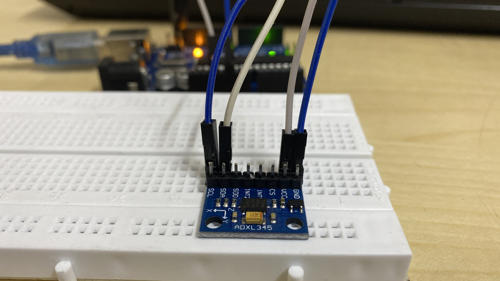
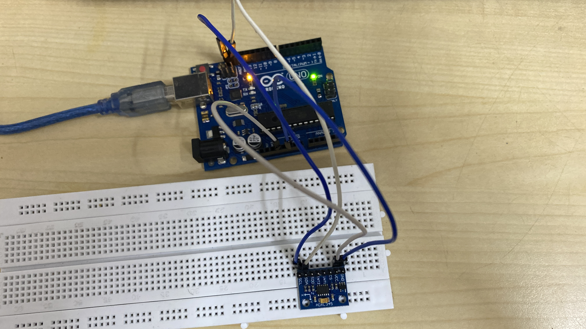
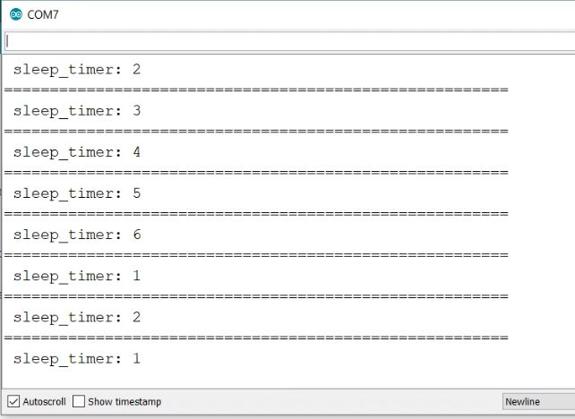
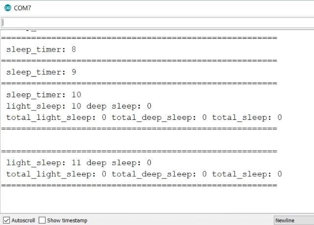
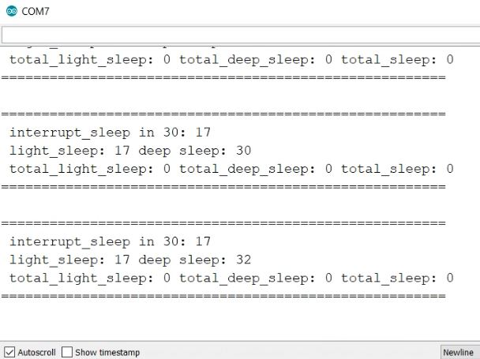
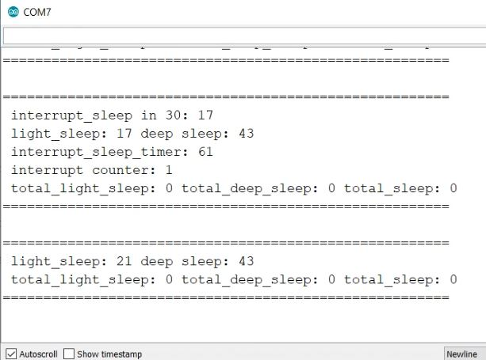
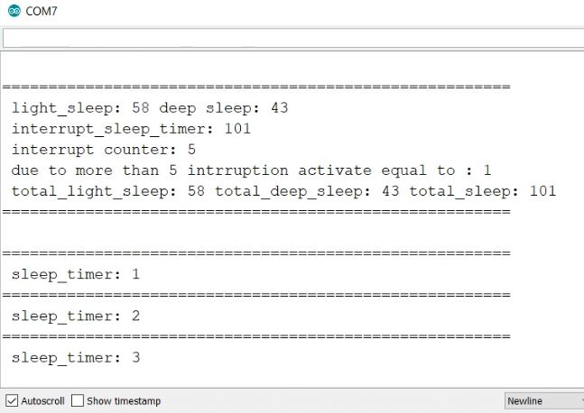

Objectives
- To make a smart sleep monitor using pulseoximeter and triple axis accelerometer.
- To take input from sensors apply random forest decision making algorithm on the data obtained to give desired results.
- To make a smart system which tells how much time a person had good quality sleep.
Devices/Components used

- Arduino UNO : Controller
- ADXL345 Sensor : Input Device
- Breadboard
- M-M Connectors
- M-F Connectors
Software Used : Arduino IDE
Library Used : Adafruit ADXL345 and Adafruit Unified Sensor
Circuit and Wiring
Arduino Code
For Arduino Code click here.How it works
It will set the start timer to zero if it detects hand movement inside the first 10 seconds.
If it successfully cross the 10 seconds without any movement. Then it will start counting light sleep.
Now it is assumed that the person is sleeping. If you move your hand it will not start time from zero. It will count interrupt.
If it successfully crosses 30 seconds without any movement by person means he/she is in deep sleep. It will start to count deep sleep now. If you move your hand in deep sleep, it will kick out from deep sleep and again go to light sleep and also make interrupt equal to 1.
If 10 second you don’t move your hand it will make interrupt equal to zero. If you are are awake or you are not sleeping, it will come out of the sleeping mode and stop light sleep timer. After 5 interruption it will count total light sleep, total deep sleep and total sleep.
